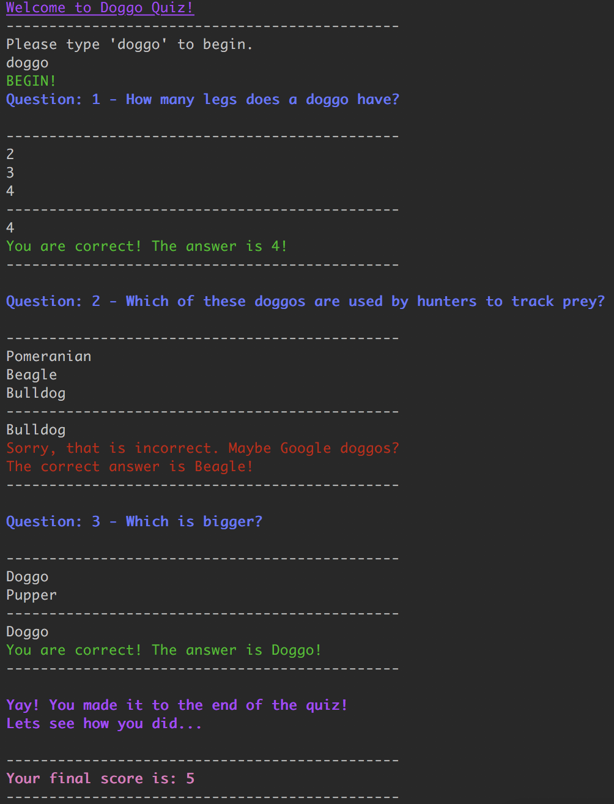

Hello!
My name is
Rhys Brian Woodberry
Who is Rhys?

Welcome! If you’re reading this I’m assuming you would like to know a little about me. I am a curious and creative person who enjoys learning new things. For the past few years I was studying a Bachelor of Arts part-time at Sydney University and working part-time at Woolworths. I had explored several areas of study at university, but was never completely satisfied with what I was doing. This led me to explore options outside of my familiar area of study and to what I am doing now, a student at Coder Academy bootcamp in Sydney, where I have been taking my first steps to my goal of becoming a full-time developer.
Outside of work and study my main passion is video games. I really like what games as a medium are capable of, the experiences that can be created and the stories told. As much as I play for the enjoyment of it, I like looking a little deeper and seeing how the medium can be pushed in different directions to offer new ways of playing or redefine what a video game can be. I have also been playing guitar and singing for about 15 years,, I have written and recorded several songs but I mostly prefer to jam along to my favourite musicians or cover my favourite songs.
Education
- bontent
- bontent
- bontent
- bontent
Work History
- bontent
- bontent
- bontent
- bontent
Skills
ICONS: html, css, ruby, railsProjects
- Portfolio Website, your current location.
- Terminal App 
Get in Touch!
ICONS: link to github, medium, linkedin, twitter